本地即隐私
图片只在浏览器内处理；保存状态与错误文案都要让用户看懂这一点。
一个纯浏览器的旅行图片工作台：排长图、控制朋友圈中部方形缩略图，并把一张照片切成 4 / 6 / 9 张发布序列。
图片只在浏览器内处理；保存状态与错误文案都要让用户看懂这一点。
画布与朋友圈预览是主角，参数只在选中对象时出现。
手机端不是桌面缩小版；工具切换、上传、排序与导出保持拇指可达。
非目标：云端账户、多人协作、AI 修图、社交平台直发与完整桌面级图像处理套件。
| ID | 需求与验收 | 状态 |
|---|---|---|
| REQ-001 | 手机与电脑上传本地图片、刷新后恢复草稿、下载结果；不上传服务器。 | accepted |
| REQ-002 | 长图工具可排序照片，在任意位置插入文字，并调整颜色、字体、字号、对齐与旋转。 | accepted |
| REQ-003 | 早期封面工具指导裁出正方形并插入扁平长图中部。 | superseded by REQ-021 |
| REQ-004 | 切图工具可把一张图裁成 2×2、3×2 或 3×3，并按发布顺序下载 4 / 6 / 9 张。 | accepted |
| REQ-005 | 明亮、简洁、影像优先，参考 Instagram 的克制与清晰，同时保留自己的编辑器气质。 | accepted |
| REQ-006 | 桌面长图编辑器的工具、画布和属性区域必须拥有独立滚动边界，不能带动整页或彼此联动。 | accepted |
| REQ-007 | 左栏固定添加工具、顺序列表单独滚动。 | superseded by REQ-010 / 011 |
| REQ-008 | 图片文字使用当前窗口内的专用弹窗编辑器，文本框可在图片内自由拖动与精细定位，不受上中下三档限制。 | accepted |
| REQ-009 | 界面支持简中、繁中与英语；文案集中管理，便于直接调整内容。 | accepted |
| REQ-010 | 整体 UI 改为方向 2：青色竖向工具轨、顶部项目栏、中央大画布与右侧编辑工作区。 | accepted |
| REQ-011 | 右侧栏参考 Adobe 的信息架构，分开“资源 / 图层 / 调整”；图层管理顺序，对每个图片或文字容器调整内部属性。原导入栏目按 REQ-020 扩展为资源。 | accepted · updated |
| REQ-012 | 图片文字的底色和边框必须随文字整体旋转；底色容器支持内边距、边框类型、粗细、颜色和圆角。 | accepted |
| REQ-013 | 导入按钮缩小，并以每行三个的资源网格展示全部图片与文字容器。 | accepted |
| REQ-014 | 图层使用更克制的矩形轮廓；只在底部添加文字；相邻两张图片可横排在同一行并分别调整。 | accepted |
| REQ-015 | 已导入资源作为独立附件库持久保存、可逐项删除；清除草稿保留资源。新增图片或文字保持当前栏目。 | accepted |
| REQ-016 | 画布整体设置归属图层栏目；调整栏目顶部明确显示当前图层或双图对象。 | accepted |
| REQ-017 | 长图预览使用结构化排版，图片、文字和双图行可点击进入局部放大，调整即时可见。 | accepted |
| REQ-018 | 文字内容与格式、图片文字与位置样式同步保存到对应资源；清空草稿后再次加入仍可编辑，旧草稿中未同步的修改自动补回。 | accepted |
| REQ-019 | 长图、封面和切图支持 HEIC / HEIF / HIF 图片，本地转换、保留文件名，显示读取状态。 | accepted |
| REQ-020 | 导入栏目改为资源，统一添加、查看与 PNG / JPG 导出；排版长图保存为独立结构化资源，清空草稿保留。 | accepted · verified |
| REQ-021 | 封面选择已保存的长图与单图，在完整图层边界插入封面并参数化增加留白；结果保存到资源，再从资源下载。 | accepted · verified |
以下三张为早期 concept。2026-10-08 用户重新选择方向 2，它现在是视觉权威；方向 1 的旧批准已被明确取代。

曾作为首版实现基准；现已被方向 2 取代，保留为决策历史。

青色工具轨、中央画布和右侧专业工作区成为当前实现；右栏通过顶部菜单化解操作密度。

排序操作直观、专业编辑感强；风险是水平时间线在手机端需要另一套编排。
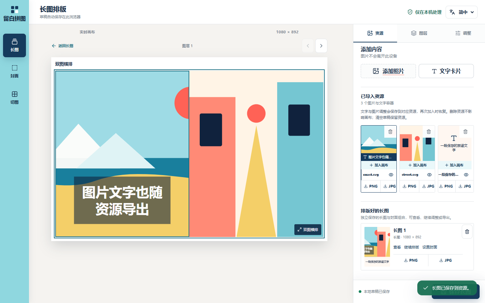
1440×900；资源可直接查看和导出，长图底部为保存动作。素材为本地测试 SVG。
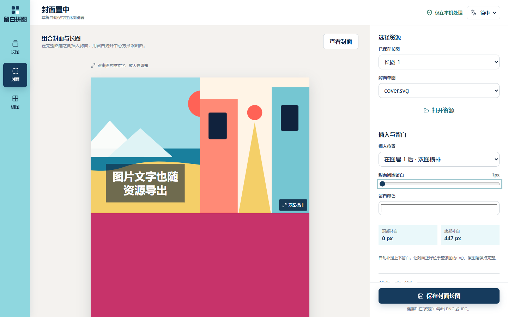
1440×900；插入位置、周围留白、取景和背景可调整，原图层完整保留。测试封面为纯色 SVG。
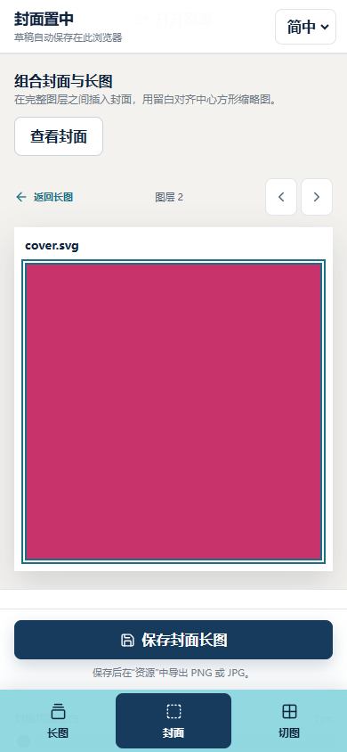
390×844；先选择资源，再查看长图或局部封面；已验证放大后自动滚动与英语无横向溢出。
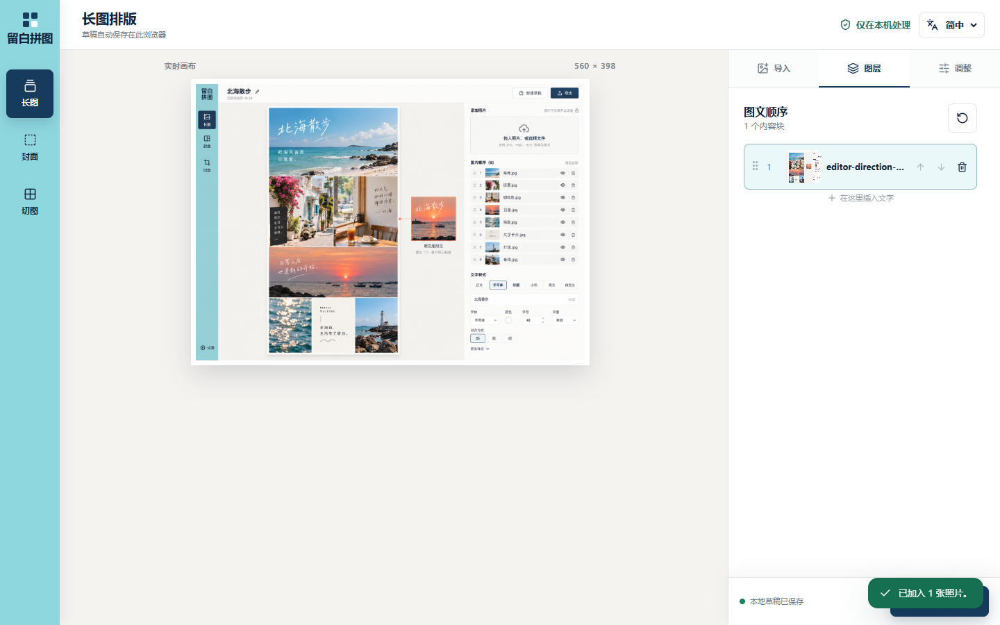
1440×900，工具轨、画布与图层面板独立分区。
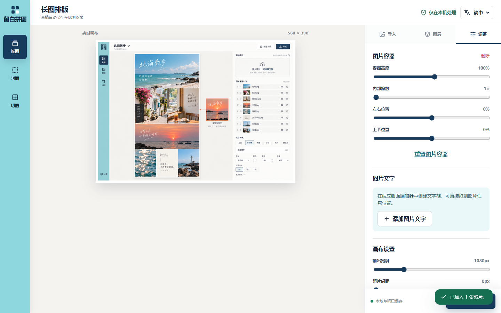
容器高度、内部缩放与焦点位置直接驱动 Canvas。
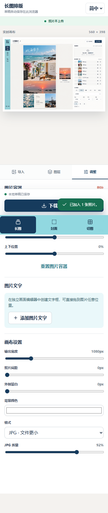
390×844，竖向工具轨转为固定底部导航，画布仍优先。
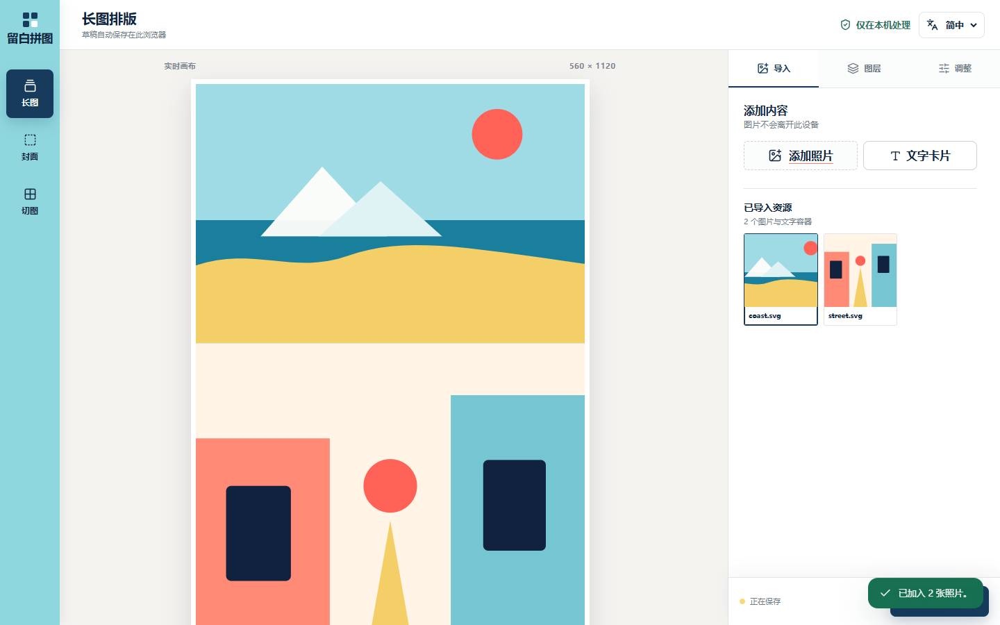
上传与文字按钮紧凑并列，已导入图片与文字容器按三列展示。
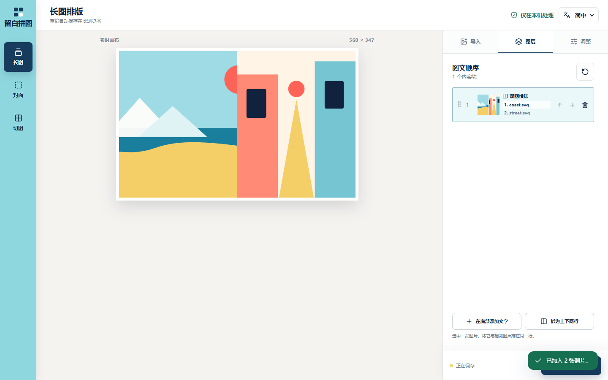
一行包含两个可独立选择的图片容器，底部集中新增与拆分动作。
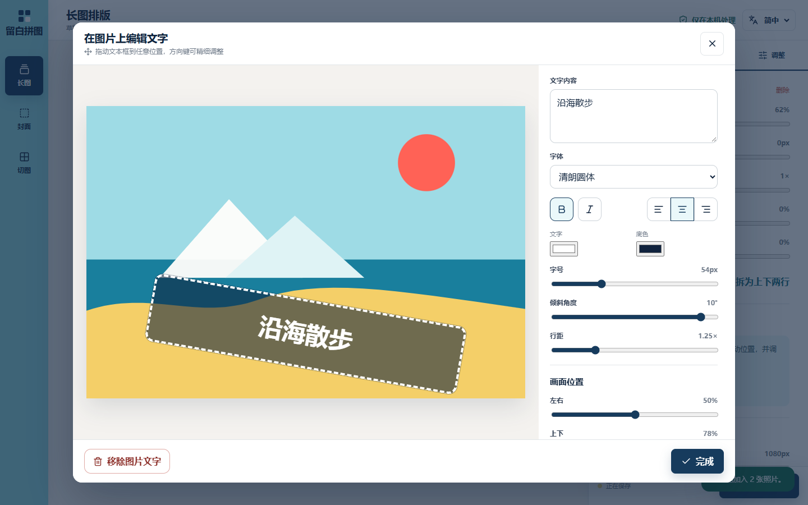
文字、底色、内边距、圆角与边框作为整体旋转。
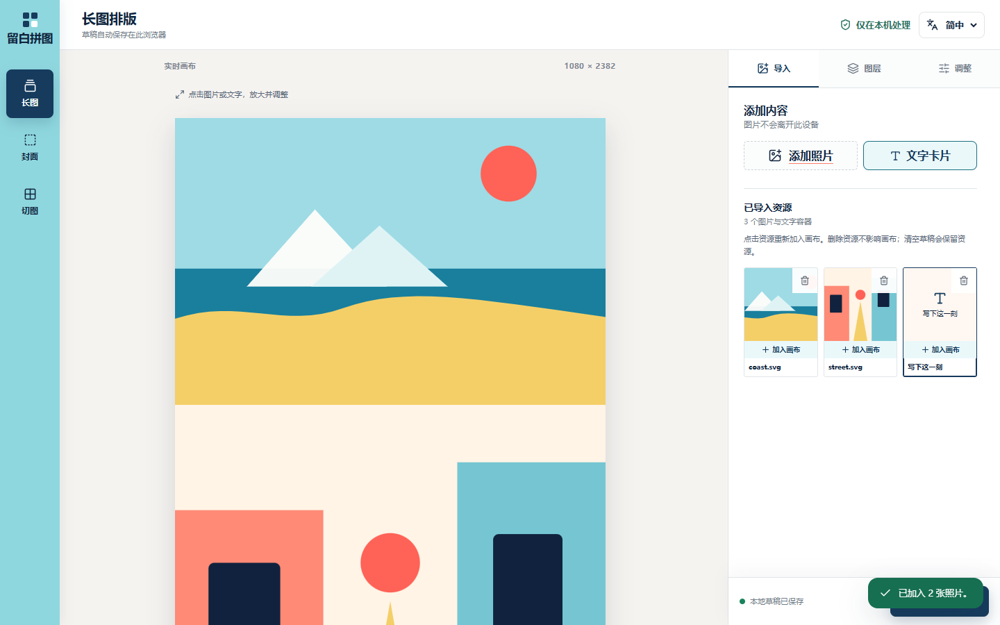
1440×900；清除草稿保留附件，加入画布生成独立图层。图中素材为本地测试 SVG。
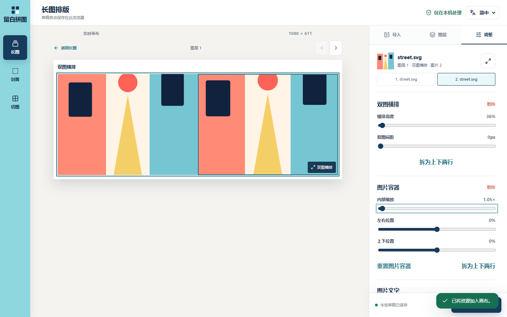
结构化预览可点击、返回和切换图层；对象标题显示图层编号与子图片编号。
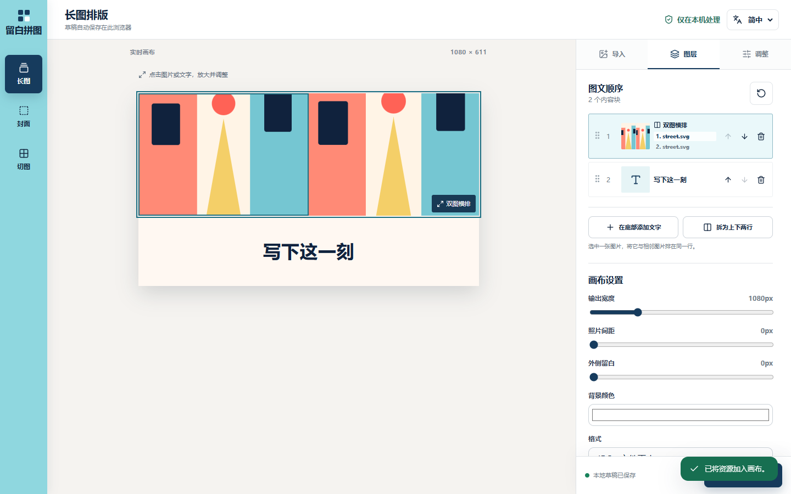
整体设置归属图层栏目，对象属性归属调整栏目。
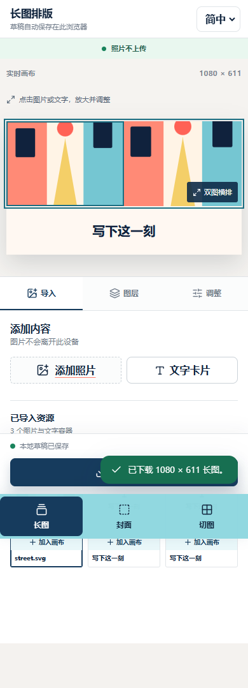
三列附件与常显删除按钮，已检查无横向溢出。
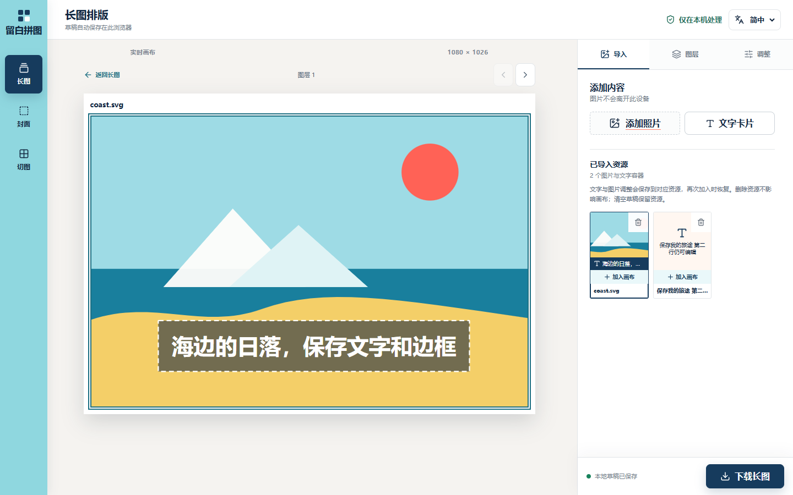
1440×900；图片资源显示文字摘要，文字资源显示最新内容。字体、位置、边框等参数以结构化数据保留，清空草稿后再次加入可继续编辑。
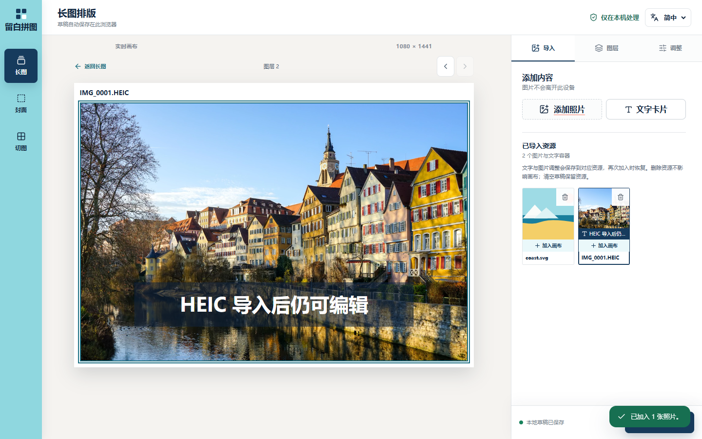
1440×900；照片来自 libheif 官方 example.heic 测试样本，验证本地转换、文字编辑及资源重用。保留原文件名，解码模块按需加载。
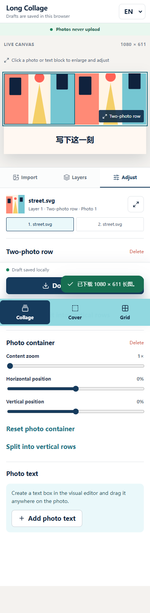
390×844 英语界面；顶部对象身份与子图片切换可见。
| ID | 建议 | 理由 | 状态 |
|---|---|---|---|
| DEC-001 | 采用方向 1，并将三栏在窄屏重排。 | 首版布局决策。 | superseded |
| DEC-002 | 使用 IndexedDB 保存图片 Blob 与草稿结构。 | 比 localStorage 更适合大图；无需服务器。 | accepted |
| DEC-003 | 以 Canvas 2D 生成下载结果；长图预览由结构化排版与 HTML/SVG 构成。 | 按 REQ-017 更新：预览可交互，导出共享布局与裁切几何。 | accepted · updated |
| DEC-004 | 采用方向 2，并将右侧工作区拆为资源、图层、调整三个顶部菜单。 | 保留大画布，同时把资源、对象选择与属性编辑的心智模型分开。 | accepted · updated |
| DEC-005 | 附件删除只影响资源库，画布内容保留；点击资源可以重新添加独立图层。 | 区分资源与图层生命周期，避免误删已排版内容。 | proposed · implemented as routine detail |
| DEC-006 | 长图和封面保存独立结构化快照；封面配方保留单图版本、完整图层、取景、插入边界与留白参数。 | 实现 REQ-020 / 021 的先保存后导出流程，删除素材不会破坏已保存结果，封面无需切开原图。 | accepted · verified |
| 映射 | 实现 | 证据 | 剩余工作 |
|---|---|---|---|
| REQ-001 / DEC-002 | verified | 浏览器上传、刷新恢复 2 个内容块；IndexedDB 草稿代码已检查 | 无 |
| REQ-002 / REQ-008 / DEC-003 | verified | 浏览器实测图片文字弹窗、自由坐标、方向键微调、文本框宽度和长图预览；生产构建通过 | 无 |
| REQ-003 | superseded | 扁平长图切开插入的旧实现已移除，由 REQ-021 的结构化图层组合取代 | 无 |
| REQ-004 | verified | 4 / 6 / 9 几何单测；浏览器确认 4 图为 2×2 预览和下载顺序 | 浏览器首次批量下载时可能要求授权 |
| REQ-005 / REQ-010 / DEC-004 | verified | 1440×900 桌面与 390×844 手机实现截图；简中和英语均无横向溢出 | 真实旅行照片最终内容验收 |
| REQ-006 | verified | 桌面页面固定为视口高度；中央画布与右侧属性内容分别拥有滚动边界 | 无 |
| REQ-007 | superseded | 方向 2 将添加、图层顺序与调整整合进右侧菜单 | 无 |
| REQ-009 | verified | 三份强类型语言文件覆盖工具、弹窗、状态、无障碍文案、页面元数据和下载文件名；语言本地持久化；12 项测试和生产构建通过 | 真实设备最终内容验收 |
| REQ-011 | verified | 浏览器实测三菜单切换和图层选择；预览与导出改为共享结构化布局，整体画布设置归属图层栏目，对象属性归属调整栏目 | 无 |
| REQ-012 | verified | 浏览器实测 10° 旋转、虚线边框、20px 圆角和 42px 内边距；弹窗与完成后的 Canvas 预览均整体旋转 | 无 |
| REQ-013 | verified | 1440×900 与 390×844 均显示三列资源格；无横向溢出 | 无 |
| REQ-014 | verified | 浏览器创建双图横排、选择单个子图片、调整行高与间距并可拆分；图层列表仅底部保留新增动作 | 无 |
| REQ-015 | verified | 真实 IndexedDB 检查附件删除保留图层、清草稿保留附件、刷新恢复、v1 升级及空资源库不被草稿重新填充；assetLibrary.ts 单测 | 浏览器存储被手动清理时附件仍会丢失 |
| REQ-016 | verified | 浏览器检查画布设置仅在图层栏目；调整标题分别显示双图行与图片 1/2；新增操作保持当前栏目 | 无 |
| REQ-017 / DEC-003 | verified | StitchPreview.tsx 与 stitchLayout.ts；预览中没有 canvas；局部选择、键盘滑杆、Escape、实际图片下载及导出尺寸与布局一致；1440×900 与 390×844 截图；23 项单测 | 真实手机触屏操作仍待最终设备验收 |
| REQ-018 | verified | 28 项单测与生产构建通过；真实 IndexedDB 验证文字内容及格式、图片文字完整参数、刷新、清空重用、双图子图片、删除文字与资源、旧草稿恢复及已有副本独立，共 11 个浏览器场景；无浏览器错误；桌面和 390px 手机截图已检查。 | 旧版多个不同副本缺少编辑时间，首次补回使用画布顺序中最后一个修改过的副本；新编辑按最后操作保存 |
| REQ-019 | verified | 34 项单测与生产构建通过；官方 example.heic 样本在 Edge 生产预览验证长图、封面、4 宫格导出、PNG 资源保存、刷新和清空重用、空 MIME / 通用 MIME、读取状态及坏文件恢复，共 12 个浏览器场景。正常图片不加载解码包，所有请求均同源，无页面错误。 | 多图容器导入首张静态图；PNG 资源不保存拍摄元数据和 HDR / 动态内容；解码包首次按需加载约 3.19 MB（gzip 约 792 KB） |
| REQ-020 / DEC-006 | verified | 39 项单测与生产构建通过；20 个生产浏览器场景覆盖资源查看、PNG / JPG 下载、文字格式、独立快照、刷新、继续排版、清草稿、删除素材与长图、HEIC 资源导出及存储读取失败；无页面错误。 | 仅当前浏览器持久化；清除站点数据会移除资源 |
| REQ-021 / DEC-006 | verified | 完整图层边界与居中几何 5 项新增单测；浏览器验证插入位置、留白、封面参数恢复、原素材删除后的独立导出。实际 PNG 为 1080×2421，中心方形内 15 个采样点均为指定封面颜色；桌面、390px 手机及英语检查通过。 | 真实手机触屏和微信客户端缩略图行为仍待设备验收 |
2026-10-08 — 按用户新要求将导入升级为资源，增加结构化查看与 PNG / JPG 直接导出；长图下载改为保存独立快照。重写封面为已保存长图加单图，在完整图层之间插入正方形并参数化留白，结果保存到资源后下载；原素材删除后仍可导出与调整。新增共享 coverLayout.ts、资源库 hook 与快照记录，修复查看弹窗 Escape 和手机聚焦滚动。39 项单测、生产构建、20 个生产浏览器场景通过；检查桌面与手机截图及实际导出中心像素。
2026-10-08 — 增加共享 imageImport.ts，用 heic-to 1.6.5 的 CSP 构建按需解码 HEIC / HEIF / HIF，浏览器本地转换为 PNG 后进入三个工具的统一预览、编辑与导出流程。文件选择器增加扩展名和 MIME，缺失类型时检查文件头并避免将 AVIF 误判为 HEIF；上传显示读取状态。34 项单测与生产构建通过，官方 HEIC 样本的 12 个浏览器场景通过；许可证与源码链接随静态产物提供。
2026-10-08 — 修复图层编辑未回写资源的问题：文字内容与全部格式、图片裁切和文字叠加数据同步为最新资源模板，资源卡片增加图片文字摘要。首次读取旧数据时恢复未同步的编辑，并标记版本以免后续刷新被旧副本覆盖。已有图层副本保持独立，明确删除的资源不自动重建。28 项单测、生产构建和 11 个浏览器场景通过。
2026-10-08 — 按用户明确的新交互要求，将资源库从图层派生列表改为独立 IndexedDB 数据；全局画布设置移到图层，调整栏目增加对象身份。长图改为共享布局数据驱动的 HTML/SVG 交互预览，支持局部放大。23 项单测和浏览器 13 个场景通过；检查桌面和手机截图后一次批量修正留白、选中边框与分组间距。Impeccable 加载器不可用，沿用现有方向 2 并完成手动界面检查。
2026-10-08 — 修复图片文字底色未随文字旋转；新增内边距、边框类型/粗细/颜色和圆角。导入面板改为紧凑按钮与三列资源格；图层改为小圆角矩形，只在底部添加文字，并新增双图横排、独立裁切与拆分。16 项测试、生产构建与桌面/手机自动化验收通过。
2026-10-08 — 用户将视觉方向改为方向 2；实现青色工具轨、项目栏、中央画布与右侧专业工作区。右栏拆分为导入、图层、调整，新增图片容器高度、内部缩放与焦点位置控制；桌面、390px 手机、英语文案和 Canvas 联动验证通过。
2026-10-08 — 接入简中、繁中与英语三语界面；文案集中到强类型语言文件；语言选择写入本地存储并同步页面语言和元数据；新增国际化单测，12 项测试与生产构建通过。
2026-10-07 — 三栏改为独立滚动；左栏添加工具置顶、顺序列表单独滚动；图片文字改为支持拖动、键盘微调和自由坐标的弹窗编辑器。桌面与 390px 手机端验证通过，9 项测试通过。
2026-10-05 — 完成长图、封面与切图工具；修正 4 图为 2×2 排列；7 项单元测试和生产构建通过；完成桌面与手机浏览器检查。
2026-10-05 — 用户确认方向 1 与先视觉稿后编码；视觉基准已锁定并进入实现。
2026-10-05 — 记录产品边界、技术栈与三个视觉基准；Impeccable 引擎下载被网络阻止，采用已安装技能正文的降级流程。